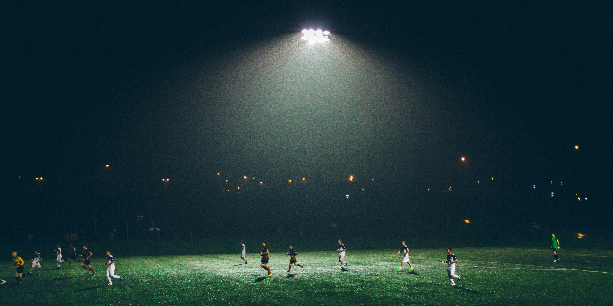

What is Futee?
A total solution for a football player’s needs, from finding pickup games to coaches.
The problem of being a solo football player.
How do you get a game when the people organising one have no way of finding you?
Once players leave school or university, the pickup game goes with them. Organising one means a group chat, a pitch nobody has vouched for, and a squad of strangers whose skill level you find out at kickoff.
Where do you play?
A pitch nobody has vouched for. There is no way to judge a venue until you have already paid for it.
Who do you play with?
Whoever answers the group chat. The creator stalls at venue selection; the player stalls waiting to hear back, with no signal that an application went anywhere.
How good will the game be?
Nobody knows until kickoff. Standard is the one thing no organiser can promise and every player wants.
“Finding a good game is a coin flip.”
A regular player, Bangkok — from the questionnaire and calls
How did Futee solve this?
A date, a pitch, three taps.
Every finding was inverted into a feature, one at a time. Three of them carried the product.
What I did
UX research, information architecture, the UI system and the visual identity, over a fourteen-week engagement across 2021–22. A team project, not a solo one — the stakeholder and player calls were run together rather than outsourced. Seventeen screens across web and iOS, handed to an external firm to build.
So how did an app plan to solve a problem for the community?
Let me walk you
through how we did it.
How can I as a player find games?

Matchmaking — web
Now how do I find a place to play?
Search splits three ways — all, players, pitches. A pitch shows how many timeslots are open before you tap in, and the top-rated pitches sit above everything, certified and boosted.

Detailed search — all, players, pitches
Who am I actually playing with?
- PositionRW
- Rating8.1 / 10
- Wins73%
Kittisak Wang, from the invite list and search
Standard is the one thing a group chat can’t tell you. So every player carries a rating out of ten, given by the organiser after each game.
It turns up before you apply, not at kickoff — on the invite list, beside a player in search, and on your own dashboard. The research line that asked for it was blunt: finding a good game is a coin flip.

Invite players, settings and top-rated pitches — web
What does Futee need to know about me?
Only what changes the match. Sign-up is an email, or Google or Facebook, then a short step to personalise the account. Everything else is deferred until it is needed.
Position
Up to two you play best in. You can change them later.
Preferred foot
Asked once, kept on the profile.
Physical info
Height, in its own tab, away from everything else.
Availability
A single toggle. It decides whether you appear in an organiser’s Available Players list.

Personalising the account — iOS
When’s my next game?
The dashboard opens on the reason most people come back: the next game, with its date and ground, pinned to the top.
Underneath it the record builds itself. One persona’s pain point was having to write stats down by hand; here nobody does.
Upcoming game
Date and ground first. On the phone, every upcoming game in one dropdown.
Games played
Counted for you, game by game.
Average rating
What an organiser sees before they invite you.
Create or find
Both one tap from home, on web and on the phone.

Refined dashboard — web and iOS
The life of a game
Every game goes through the same six stages. I mapped how the person running it feels across them, and the mood drops in two places — choosing the venue, and rating afterwards. Both got a feature of their own.
Search
Excited, and already thinking about everyone else’s convenience.
Choose
A bunch of venues and no way to judge them. Hence top-rated, certified pitches.
Make
Public or private, and a match link generated on the spot.
Share
The link goes to the inner circle, or out in public.
Play
Split the teams, then the game itself.
Rate
The chore after the fun. Hence rating built into the flow, not left to memory.
Where the mood dips

Journey map — the game creator
That’s the player’s side.
But every game on Futee has a second person behind it — the one who made it. The two never speak to each other, and every screen has to serve both.
Desk research, a questionnaire, and calls with stakeholders in Thailand and regular players in Bangkok produced two personas. They stall in different places.

The creator — Chatri, 18
A student who organises games to meet new players and get better. He stalls at venue selection, with no way to judge a pitch.

The player — Chai, 47
“I used to play football regularly when I was in school and college… But I still love the game.”
He works full time and has no time to organise. He stalls waiting to hear back, with no signal that his request went anywhere.
The brief assumed you gather a squad and then book something. The research said the opposite. It was the one real argument with the brief, so here it is drawn out, including the version that lost.
What the brief assumed — fill, then create
- Find players
- Agree a time
- Book a pitch
- Game exists
Rejected. Nothing exists until everyone agrees, and nobody knows if they’re in.
What the research pointed to — create, then fill
- Pick a date and pitch
- Game exists
- Players join
- Squad fills
Taken. The game is real at step two, and joining is a tap, not a negotiation.

Problems, inverted
Every finding became a feature, one at a time. Finding reliable players became the organiser’s rating. Wanting a game soon became open games in your area. Building a circle became direct invites.
Nothing went into the product that couldn’t be traced back to research.

Information architecture
The register flow and the homepage tree sit on one sitemap. Creating a game, finding one, the directory and coaches all hang off the same home, so the creator and the player never end up in different products.
What went over
It went to the stakeholders as a system, not a screen set — two personas, two journeys, a sitemap traceable back to research, and a UI that holds the same rules whether you’re organising a game or joining one. Create-then-fill was adopted without argument, because the journey map made the case before I did.
An external development firm built it after handover. It ran, and it has since been taken down. I don’t have usage figures from the period it was live, and I’d rather say that than imply a launch I can’t evidence.
What I’d do differently
There is no usability testing on this page, and no post-launch numbers. The evidence here runs from research to decision, not from design to a measured result.
If I ran it again, a five-person test on the create-then-fill flow would come before the visual system. It was the one real disagreement with the brief, and the one thing I argued rather than proved.